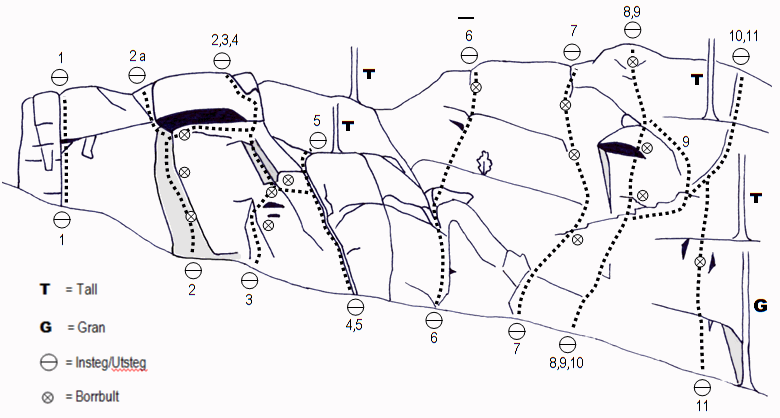

Trollberget
Lat: 65.619897
Long: 18.639336
Allmänt
Kvällssolig Norrbottensklippa med både vägg- och sprickklättring. Mestadels mixad klättring med både bultar och egna kompletteringar. Nyturspotential!
Klippan
Klättring, mest artificiell och topprep, började 1995. Efter ett antal år i träda har nu klippan ”återupptäckts” och lederna blivit fler. Ytterligare leder finns att upptäcka/borsta fram på bergets mindre/kortare partier. Längre upp på kalhygget finns även ett par boulder-block.
Klippan vetter åt sydväst vilket gör att den torkar upp fort och bjuder på trevlig kvällssol.
I huvudsak väggklättring, men med inslag av sprickor. Klippans höjd är ca 7-20 m. Borrbultarna (samtliga borrbultar placerade våren 2002 om inget annat anges) kompletteras med en vanlig uppsättning friends (kamsäkringar), kilar och hexentrics.
Vägbeskrivning
Från Arvidsjaur, kör mot Östersund. 25 km från Arvidsjaur ligger Avaviken.
I Avaviken svänger man höger mot Renviken. Efter lite drygt 1 km finns det en parkeringsplats på vänster sida om vägen. Gå sista biten till klippan som syns tydligt från vägen (ca 400 m).
<div style="width: 355; float: right; margin-left: 10px; padding: 3px; border: solid 1px #cccccc;">
<googlemap version="0.9" lat="65.616354" lon="18.659935" height="275">
65.619897, 18.639336, Trollberget
</googlemap>
</div>
Access
Rovfåglar häckar ibland på berget varför klättring då bör undvikas i maj/juni.
Ansvarig för access-frågor är Tony Gustafsson (Norrlands dragonregemente).
Leder

- 1
- Prinsessan Leia
- 5+
- Följer sprickan i bergets vänstra kant rakt upp. Flera lösa stenar/flak i ledens nedre del gör den svårsäkrad. Kort, men jämn klättring.
- 2
- Jabba the Hut
- 5+
- Väggklättring rakt upp till taket. Traversera sedan höger på goda grepp tills taket passerats. Därefter rakt upp längs sprickan/blocket. Försiktighet bör iakttas om friends används under taket då det kan vara löst på sina ställen.
- 2a
- Utstegsvariant på 2
- 5+
- För de som inte vill traversera åt höger under taket går det att smita ut till vänster.
- 3
- Han Solo
- 6-/6
- Startar omedelbart till höger om Jabba the Hut. Klättra upp/in i hörnet, därefter på ”goda” handgrepp till höger för att därefter ta sig upp på den lilla hyllan. Väl där är cruxet passerat. Följer sedan hörnet upp till högerkanten av taket. Utsteget gemensamt med Jabba the Hut.
- 4
- Bobba Fett
- 5
- Insteg gemensamt med Luke Skywalker. När händerna når den stora hyllan till vänster om utsteget på Luke Skywalker, traversera vänster och kliv upp på den lilla hyllan (samma hylla som Han Solo). Resten av leden gemensam med Han Solo.
- 5
- Luke Skywalker
- 4+
- Följer den mycket tydliga sprickan/flakformationen i hörnet. Säkras med friends och hexentrics. Var försiktig då friends (kamsäkringar) används bakom flak mht den kraft som utvecklas vid ett fall.
- 6
- Perversa kollegor
- 4-
- Startar under en flak/blockformation. Fortsätter sedan rakt upp till utsteget.
- 7
- Två krokar i taket
- 4-
- Startar mitt för den stora väggen. Inledningsvis snett upp till höger på goda grepp för att sedan vika rakt upp.
- 8
- Tjejerna på kameral
- 5/5+
- Insteg till höger om Två krokar i taket. Snett upp till en diagonal hylla. Sedan rakt upp (crux), via en liten hylla, vidare upp över de mjukt rundade formerna till utsteget som sker via ett kort sva-parti.
- 9
- Metkroken
- 3+
- Egentligen en variant av Tjejerna på kameral. Cruxet på Tjejerna... undviks genom en metkroksliknande kringgång på höger sida via ett jordigt hörn. Insteg och utsteg är gemensamt med Tjejerna på kameral.
- 10
- Kåt i Kosovo
- 5-
- En led med två korta passager av sprickklättring. Insteg gemensamt med Tjejerna..., följer sedan den diagonala hyllan snett upp till höger till den första korta sprickan. Därefter via en hylla till den andra korta sprickan som är ledens utsteg.
- 11
- Psykopater i uniform
- 6
- Ett boulderliknande insteg (crux) leder till en liten hylla. Nästa korta vägg klättras på goda grepp upp till den större hyllan. Resterande del av leden är gemensam med Kåt i Kosovo. Insteget kan lätt skapa psykoser hos klättraren, särskilt om man väljer att börja bakom/inne i granen, vilket mer än en gång slutat med en trälandning. Annars är mantling en teknik man bör behärska.
Kategori:sport
Kategori:trad
Kategori:mix
Kategori:vertikalt
Category:Norrbotten